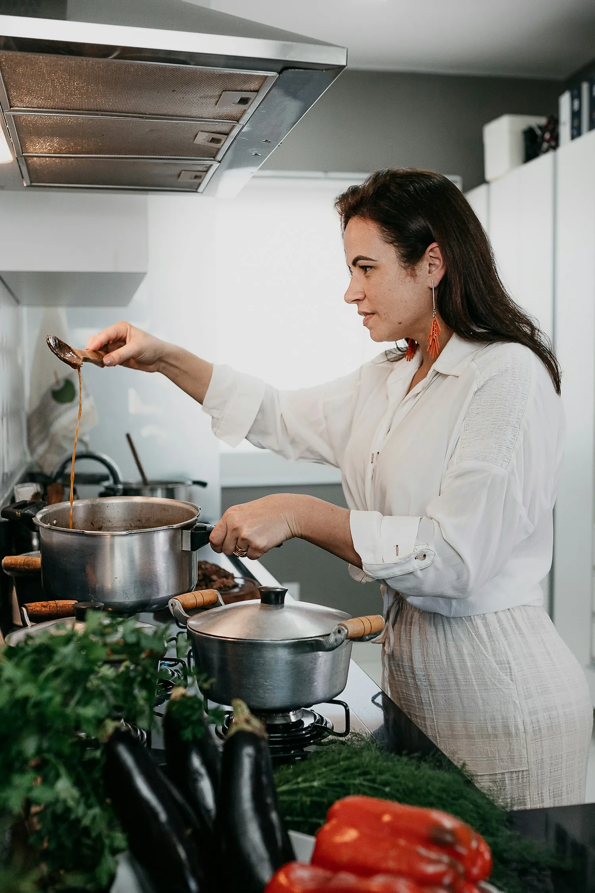
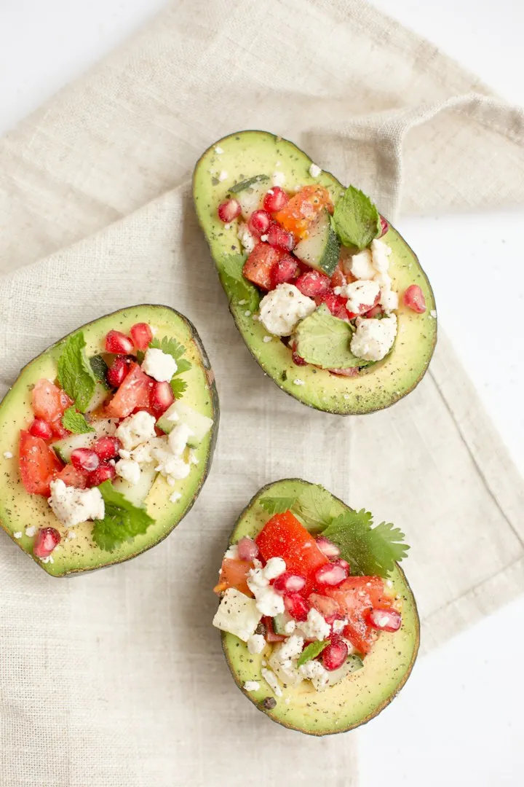
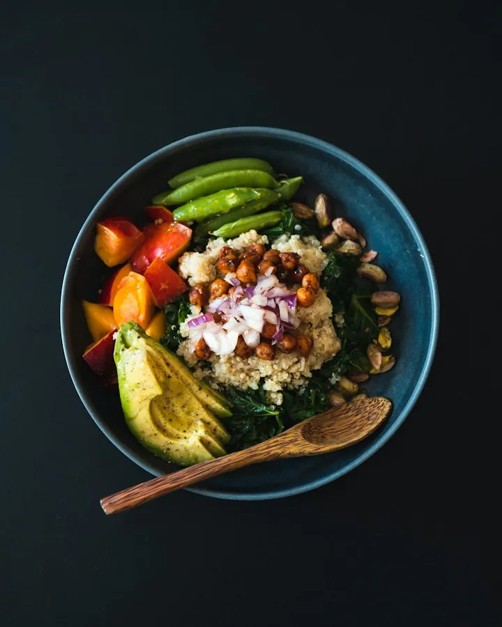
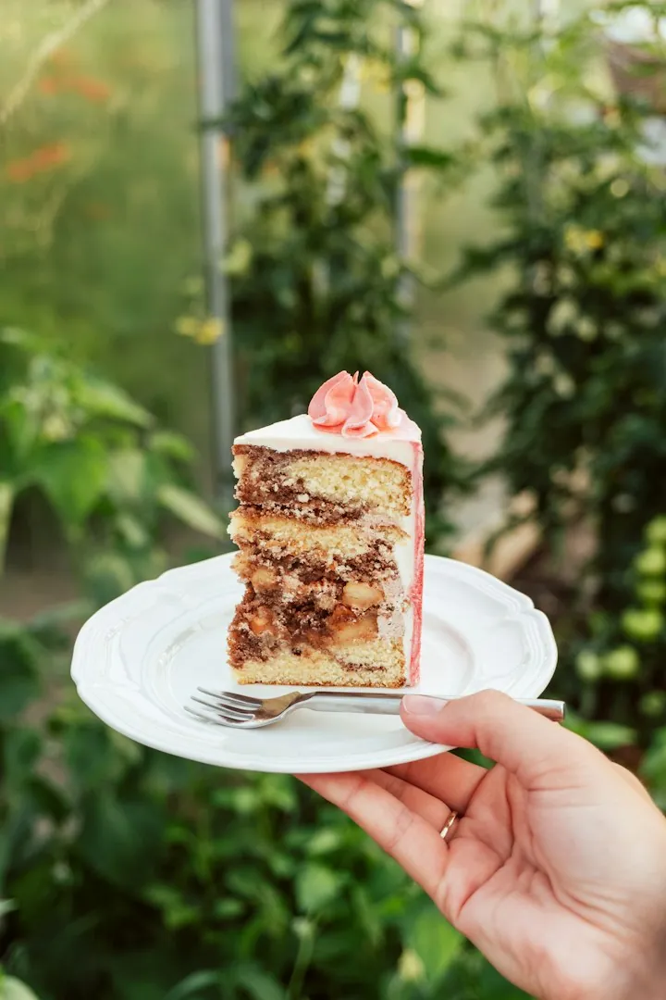
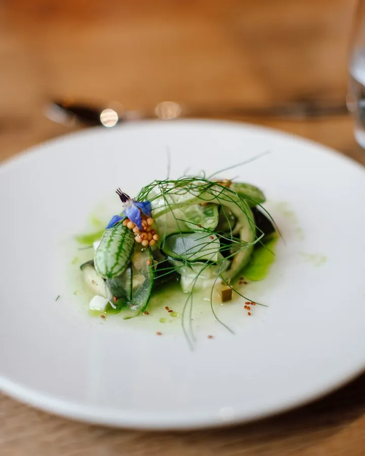
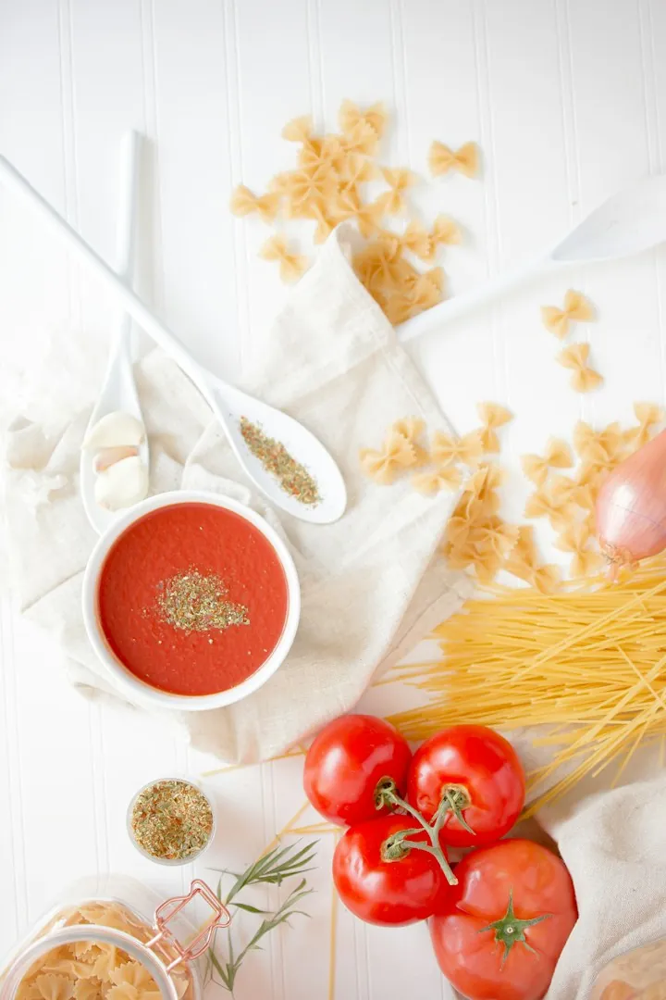
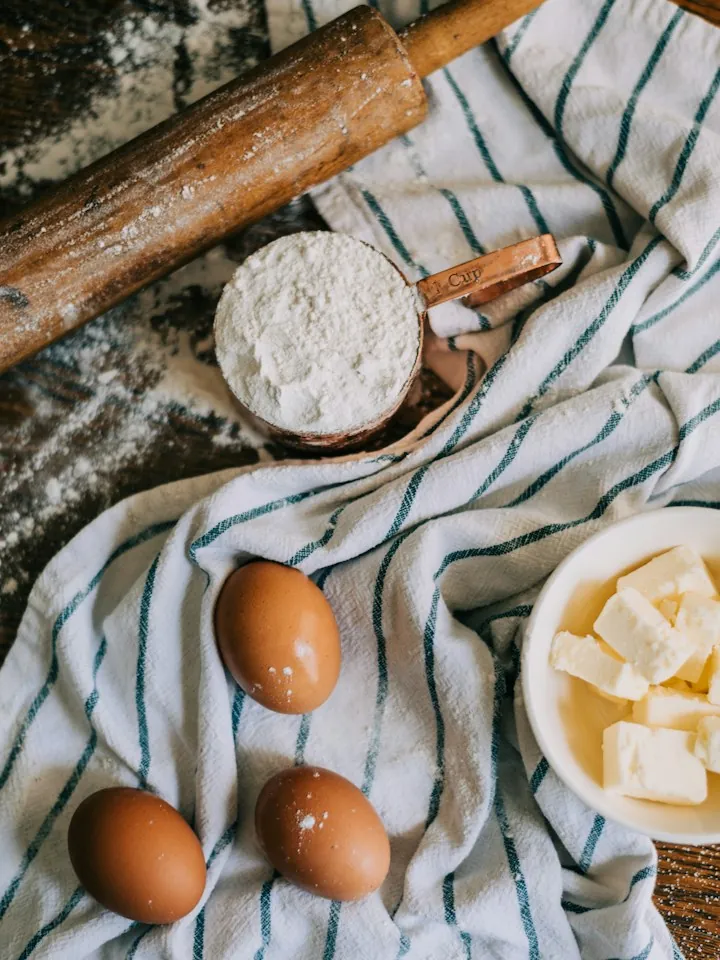
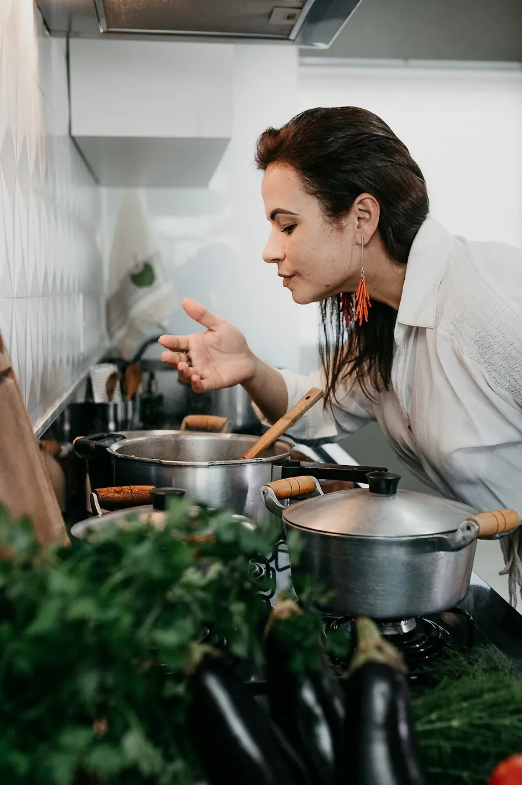

R$ 41 mil
Grão & Cia · semana do arroz
3 Reels com receitas usando o arroz da marca e cupom BIA10. 2.380 cupons usados em 30 dias.
Mídia kit · atualizado em outubro de 2026
@bianacozinha · São Paulo
Receitas de 20 minutos para quem chega cansado do trabalho e ainda quer comer bem. Panela, mercado da semana e comida de verdade, sem frescura.

Números tirados do painel de cada rede. O print de cada um vai junto com a proposta.
22% homens. A maioria cozinha para a família de 2 a 4 pessoas.






R$ 41 mil
3 Reels com receitas usando o arroz da marca e cupom BIA10. 2.380 cupons usados em 30 dias.
+18 mil
Série de 4 receitas na air fryer. A marca ganhou 18 mil seguidores e esgotou o modelo da série no site.
9,4%
Carrossel com a ceia completa. Engajamento de 9,4%, o maior da conta no ano.
Escolha os formatos. O total sai na hora; acima de 3 entregas, 10% a menos.

Respondo em até 1 dia útil. Para campanha de data comemorativa, chame com 3 semanas de antecedência.
contato@bianacozinha.com.br
Chamar no WhatsApp